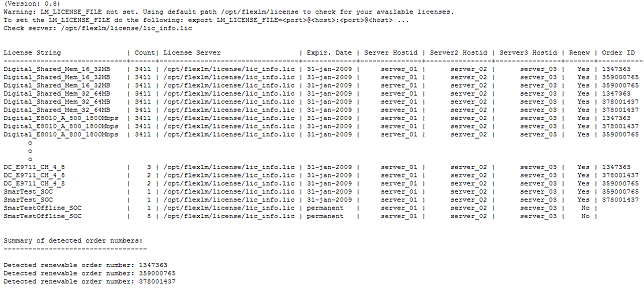

getOrderNumbers tool
The getOrderNumbers tool enables you to get a complete list of the licenses installed on your license servers. This output is one of the files required by the License Renewal Comparison Tool.
You can run the tool either on one of your license server hosts or on any of the SmarTest clients. It is supported on Red Hat Enterprise Linux 5 and 7 (RHEL 5 and RHEL 7).
To download the tool from the Advantest web page go to:
Go to www.advantest.com/licensing and click Download License Comparison Tool and GetOrderNumber Tool.
Download the getOrderNumber tool appropriate for your system controller operating system. The available tools are:
- getOrderNumbers.rh5.rh7.0.91.1.tar.gz on the web page for the
GetOrderNumbers tool 0.91 for RHEL5 and RHEL7.Note You might have downloaded the getOrderNumber tool at the same time as you downloaded the Comparison Tool installation package.
To install the tool, extract it and copy it to a host in your network running RHEL 5 or 7 (see above), for example:
/home/my_name/license-renewal-tools/getOrderNumbers
After you have copied the file, make sure it is executable.
If you have license servers in multiple independent networks, you must run the getOrderNumbers tool in each network.
This does not apply to the recommended three-license-server redundancy configuration, or for multiple license servers within a network. For these configurations you need to run the tool only once, either on one of the license server hosts, or on a SmarTest client host.
For example, if you use a three-license-server redundancy configuration, the output will be one license server inventory file showing the installed licenses for all three servers.
Example
The following example illustrates a license server inventory file for a three-license-server-redundancy configuration:
